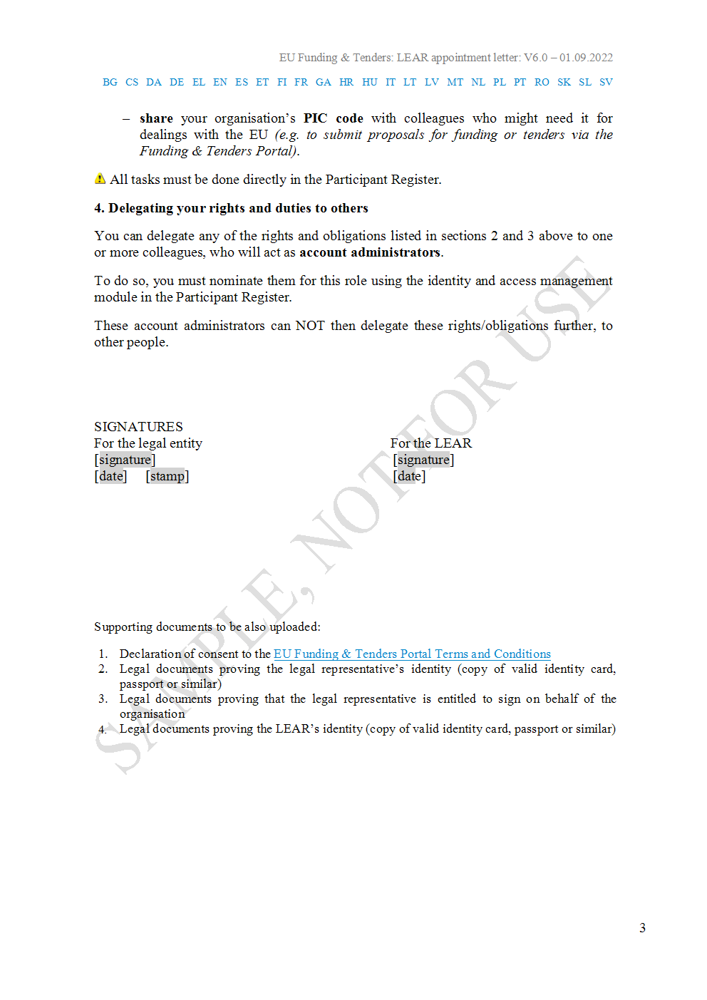

Example: did:elsi and onboarding with Verifiable Credentials
A common problem in ecosystems like Data Spaces is how organisations can onboard the ecosystem in a trusted and automated way, avoiding manual paperwork.
To illustrate the usefulness of the did:elsi method, this section describes the relationship of the did:elsi method with a special type of Verifiable Credential that we call LEARCredential and which can be very useful to perform, among others, the onboarding process in ecosystems like Data Spaces with compliance to the eIDAS regulation.
This section describes how the process of onboarding can be performed by an employee of an organisation, who has been appointed to do so by a legal representative of the organisation using eIDAS certificates and Verifiable Credentials.
The appointed employee will perform the process by using a special type of Verifiable Credential called LEARCredential (from Legal Entity Appointed Representative).
Any Verifier that trusts the eIDAS Trust Framework will be able to verify that:
- The person presenting the LEARCredential is the same as the one identified in the credential
- A legal representative of the organisation has attested that the person has the powers described in the credential
This enables the person presenting the LEARCredential to start the onboarding process and also to provide any additional required documentation, preferably as additional Verifiable Credentials to enable automatic verification of compliance with the onboarding requirements (including Gaia-X credentials issued by the Compliance Service of Gaia-X).
A little bit about onboarding
The word onboarding refers to a process which precedes entering into a business relationship with a new participant, which in our case has to be a legal person (because did:elsi is only for legal persons).
In general, the onboarding process is one of the less digitised and more diverse, with different implementations depending on the sector of activity and local regulation. Even within the same sector the actual implementation of onboarding processes for different companies can vary considerably. Onboarding of participants in an ecosystem may also present differences depending on the specific ecosystem.
This chapter presents an approach based on eIDAS certificates that can facilitate in the EU area a fully digital and automated cross-border onboarding process and compliance with KYC (Know Your Customer) requirements.
Onboarding of a new participant in the ecosystem is a critical activity, and proper identification of the new participant at this stage affects very much to the level of trust of the whole onboarding process and so the level of trust that all the other participants in the ecosystem can place on the identity of the new participant. The objective here is to provide a reasonable balance between convenience and level of legal certainty and security of the electronic transactions involved in the onboarding process.
To facilitate the descriptions later in this document, we reproduce here some relevant definitions taken from the eIDAS Regulation:
Electronic identification means the process of using person identification data in electronic form uniquely representing either a natural or legal person, or a natural person representing a legal person.
Person identification data means a set of data enabling the identity of a natural or legal person, or a natural person representing a legal person to be established.
Authentication means an electronic process that enables the electronic identification of a natural or legal person, or the origin and integrity of data in electronic form to be confirmed.
Relying party means a natural or legal person that relies upon an electronic identification or a trust service; The onboarding process presented in this chapter is just one of the possible options that can be implemented, but it should be the main one supported in the EU region given its advantages.
Types of certificates for onboarding
did:elsi uses eIDAS certificates. The types of certificates which are relevant for the onboarding process are the ones issued to natural persons, to legal persons and to natural persons representing a legal person (as described in article 3(1) of eIDAS for the case of representation).
Based on the eIDAS regulation, some TSPs (Trust Service Providers) in the EU provide several types of certificates for electronic signatures and seals:
- Natural Person certificate for electronic signatures
- Legal Person certificate for electronic seals
- Natural Person as Legal Entity Representative certificate for electronic signatures
Some terminology
Not all Member States implement at this moment the certificate for a Natural Person as Legal Entity Representative, but the onboarding process described below takes advantage of it when it is available for a participant initiating the onboarding.
In this way, the onboarding process is prepared for the future, because given that there are different cases of representation, the eIDAS Technical subgroup has been requested by the eIDAS Cooperation Network to amend the technical specifications to include all the cases of representation (see section "2.8. NATURAL AND LEGAL PERSON REPRESENTATIVE from eIDAS SAML Attribute Profile V1.2., 31 August 2019"). It is expected that in the near future most TSPs will start issuing those certificates that simplify and streamline enormously the onboarding processes, not just for this specific use case but for any type of use case in the economy.
To facilitate the explanation below, we will use the following terminology:
- NP: Natural Person holding a certificate for electronic signature.
- LE: the Legal Entity that is being onboarded, holding a certificate for electronic seal.
- LER: the Natural Person as Legal Entity Representative, holding a certificate for electronic signature when acting as legal representative of a legal entity.
The above concepts have a one-to-one relationship with the legal entities in eIDAS. However, we need a little bit more flexibility with respect to the person/employee that can initiate and drive the onboarding process of the legal person in the ecosystem. Even in a big company there are not many employees that have the power of legal representation. We define here an additional concept that is being used already in many other contexts:
- LEAR: Legal Entity Appointed Representative, a natural person that has been nominated (appointed) by a legal representative to act on behalf of the organisation to perform a limited set of processes, in our case the onboarding process (and maybe some additional tasks).
Instead of using traditional X.509 certificates, we require that the LEAR receives a special type of Verifiable Credential called LEARCredential with proof that the person has the power to represent the legal person in some limited capacity. This credential is described later in this document.
This concept of LEAR is very similar to the equivalent one for how organisations interact with the European Commission to perform certain tasks on behalf of their organisation, as part of its participation in EU funded grants, procurements and prizes that are managed via the EU Funding & Tenders Portal. To illustrate further, see below the description of LEAR from the Commission.
The LEARCredential
The LEARCredential can be generated in different ways, using the different eIDAS certificates described in section and the Trust Service Providers:
- Using the LE certificate. The person controlling the LE certificate issues a Verifiable Credential to a natural person which typically is an employee of a department in charge of managing the onboarding processes and the relationship with a given ecosystem. The Verifiable Credential includes a description of the actual powers that are being delegated (the required ones have to be defined by the ecosystem). The Verifiable Credential is sealed with the certificate of the LE. This VC is then called a LEARCredential and the person controlling it can use it to authenticate in the onboarding process and act as LEAR.
- Using the LER certificate. The main difference with the above is that in this case the Verifiable Credential is signed with a LER certificate. This tends to be easier, especially in big companies because there are normally more than one LER depending on the company structure. As a special case, the LER can issue a LEARCredential to herself and then become a LEAR. This can be used when the LER wants to be the one performing the onboarding process.
- Using a trusted entity before onboarding. When neither LE nor LER certificates are already available in the company, a TSP or other trusted entity accepted by the ecosystem could generate and sign the Verifiable Credential directly, instead of generating a LER certificate.
The main difference with the previous scenarios is that the LEARCredential is signed by a trusted entity and that it has to be involved before the onboarding process starts, making the process somewhat more cumbersome and less self-service.
The LEARCredential replaces its analog counterpart with a more efficient, machine-interpretable version. To illustrate, we continue using here the example of the LEAR for the Funding & tender portal of the EC, with the natural language letter that has to be signed: LEAR APPOINTMENT LETTER.
Claims about the subject
The LEARCredential should include claims identifying the subject of the credential, the person who will act as LEAR. Each Data Space can define their own depending on their specific requirements. For the example for the EC portal, they should replace their analog counterparts in the first page of the letter, displayed here for illustration.

Roles and duties
The LEARCredential should specify the roles and duties of the LEAR. This can be done either embedding a machine-interpretable definition of the roles and duties in the credential, or with just a pointer to an external definition of the roles and duties in natural language, hosted somewhere else. The ideal approach is the first option, expressing the semantics with a proper machine-readable language, because this will allow automatic access control at the granularity of the individual sentences of that expression language.
For illustration, the following figure shows some of the roles and duties in our LEAR example.

The major problem here is to what level the natural language description of the roles and duties of the LEAR and delegation of those will be described in a formal language, versus simply embedding a secure pointer to somewhere where the actual natural language description is stored. This is an important subject for automating completely access control.
Further delegation of powers
The LEAR has delegated powers from the legal representative of the legal person. Using a similar mechanism, the LEAR can further delegate a subset of those powers to one or more persons who will act as account administrators. This can be seen in section 4 of the letter for our example LEAR:

Proving control of the LEAR Credential
The person being appointed as a LEAR is identified as the subject of the credential. In order to later prove control of the credential, the issuer should embed as one of the claims a public key that corresponds to a private key only known by the LEAR and that will be used to sign challenges in the identification and access management systems of the Relying Party that wants to verify the LEAR Credential.
If the LEAR has an eIDAS certificate, then the contents of that claim should be the certificate itself. Alternatively, the keypair can be generated in a secure and private way during the issuance process (which uses the OIDC4VCI standard).
The DID identifier for the LEAR in the credential should use the did:elsi method (if the LEARCredential embeds an eIDAS certificate) or did:key if it does not.
Signing of the LEARCredential
The LEARCredential must be signed by the issuer using either a LE certificate or a LER certificate, following the JAdES format specified in [[JAdES]].
The issuer should be identified in the credential using the did:elsi method.
The identification and verification phase
The onboarding service of a Data Space can act as a Relying Party and use the LEARCredential for authentication to identify the legal person involved and the natural person performing the onboarding and additionally verify the binding between both identities and that the natural person has the powers of representation.
This can be done fully automated and without requiring a previous relationship among the new participant and the onboarding service, enabling self-onboarding.
Once this step is performed, the LEAR can provide additional documents (ideally as Verifiable Credentials) to complete the onboarding process or perform other required validations. For a Gaia-X compatible Data Space, the LEAR can provide credentials received from the Gaia-X Compliance Service.